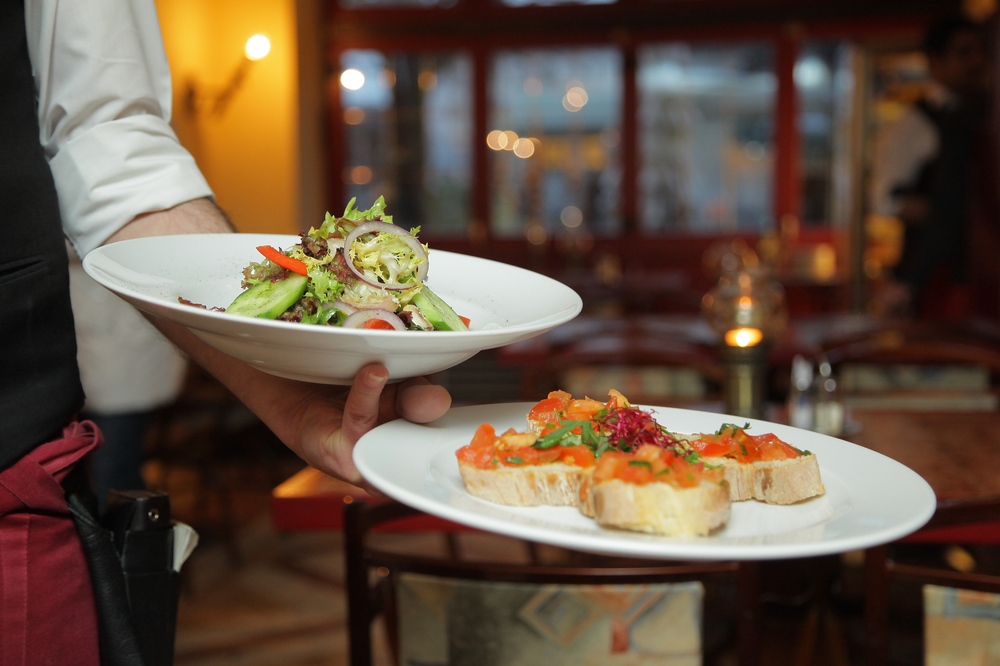
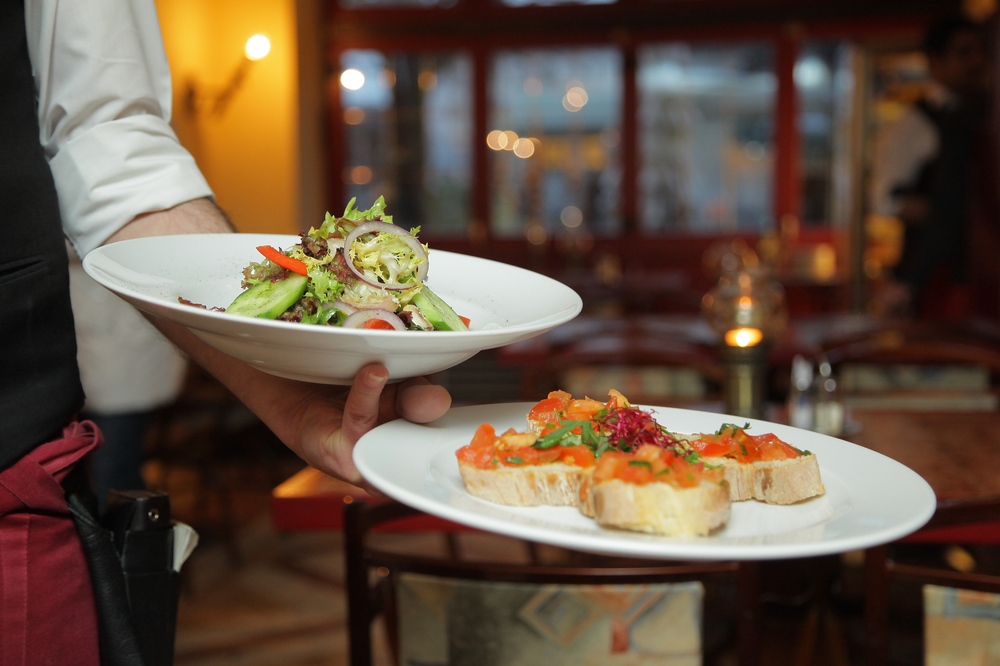

Joseph Morgan
Hello, my name is Joseph!
I am currently a full-time student at UC-Riverside majoring in Psychology and minoring in Statistics. I will be graduating with my Bachelor of Arts (BA) in Psychology this Spring 2020. I am planning to take a gap year after I graduate to reassess academic & professional goals, get started on paying off my student loans, and spend my time preparing for graduate school. I also plan on taking the Graduate Record Examination (GRE), which is pertinent to gaining entrance into any grad program. When I go back to school I plan on completing a business degree and I have been looking into the MBA program at UCR. With my prior background in Psychology, I plan to zero in on marketing which will be my concentration inside the program. I’m really interested in utilizing psychology to persuade people to buy certain products by targeting select audiences and finding out what people like or what the current trends are. Also, with my prior background in Statistics I could perform analyses to see what the current trends in sales are and predict what people buy. I participated in research as a research assistant for three quarters (one academic year) at UCR and have experience with gathering and collecting data. Also many courses I have taken within UCR’s Psychology program have given me the tools to design my own study. I have experience with Statistical programs such as SAS and R which I have learned in a couple courses taken at UCR. Also, after taking an introductory computer science course, I have experience with Microsoft Office Suite ( Word, Excel, and Access) and coding in HTML. Also, as a second option, I have been looking at some of the extension programs at UCR and may pursue a professional degree in computer coding at some point if I decide not to go to graduate school.
I really enjoy the hospitality industry and have several years under my belt working in the restaurant. In the past I have worked as a busser during the Summer for 5 months and hosted at another restaurant for ~2 years. Right now I am currently employed as a To-Go Specialist and have been there about 2 months now. I will probably be working part-time for the remainder of my education in order to afford school fees and the like. I really enjoy working and interacting with other people and the restaurant allows me to do that on a regular basis. I have developed many skills working in food service such as how to conduct myself professionally, working alongside a team, and learning to handle multiple tasks at once. I think my time spent working part-time alongside my part-time student status has helped me to become more responsible and independent, and has also shaped my character in ways I wouldn’t be otherwise. My long-term goals are to secure a career I enjoy doing everyday and with which I can support and raise a family.
Thank you for stopping by!
Experience
Italian Restaurant
•Process orders over the telephone. X
• Read and interpret reciepts & gather the appropriate items for the order.
• Respond promptly to all guest needs & requests.
Research Assistant
• Check in participants
• Follow up with missed appointments.
• Assess participants during training session.
• Administer participant payment and compensation.
Education
University of California Riverside
Riverside City College
Martin Luther King High School
Portfolio


